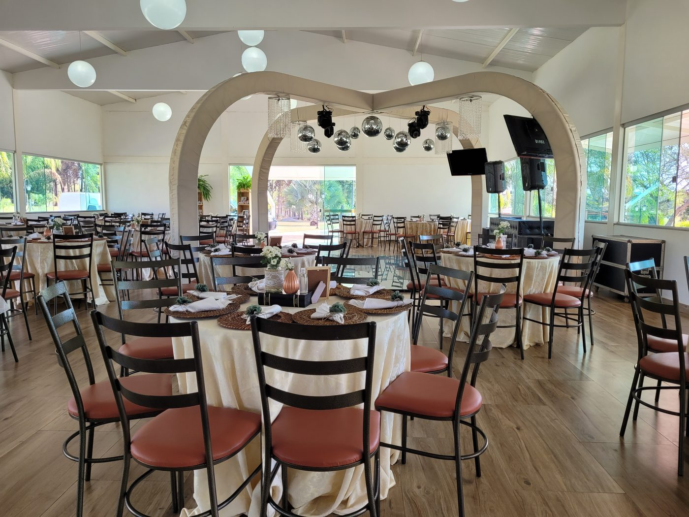
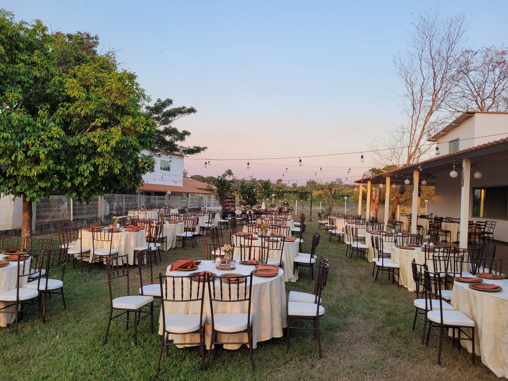
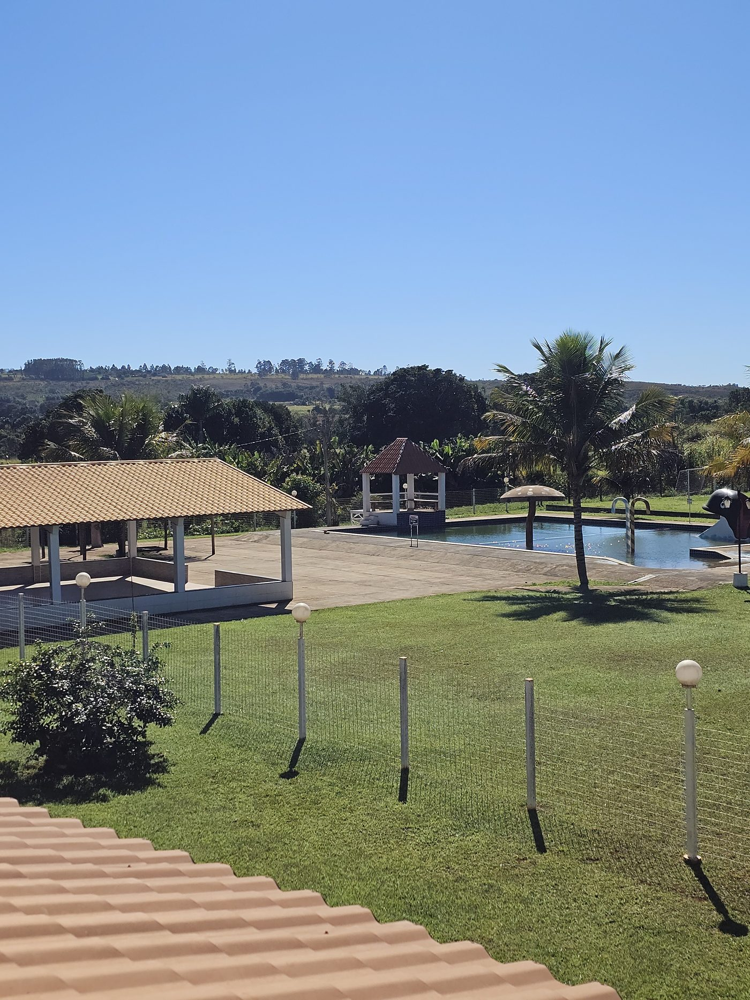

Garden
Jardim aberto com piscina, gazebo e amplo gramado — cenario natural para cerimônias ao ar livre e festas sob as estrelas.
Simular orcamento do Garden →
Espaco Bem Me Quer · Brasilia
Garden & Villa: dois espacos, uma só dedicacao — jardim, piscina e salao coberto para casamentos, aniversarios e celebracoes do seu jeito.
Sobre o espaco
O Bem Me Quer nasceu para receber histórias: casamentos ao ar livre, aniversarios de 15 anos, formaturas e confraternizacoes. Dois ambientes — Garden e Villa — com cozinha equipada, piscina, jardim e salao coberto, prontos para qualquer estacao do ano.
Nossos espacos

Jardim aberto com piscina, gazebo e amplo gramado — cenario natural para cerimônias ao ar livre e festas sob as estrelas.
Simular orcamento do Garden →
Salao coberto com estrutura completa: churrasqueira, forno de pizza e tres piscinas — conforto para eventos em qualquer clima.
Simular orcamento da Villa →Servicos adicionais
Some ao aluguel do espaco os servicos que fazem a diferenca no seu evento.
Cobrado por convidado, direto no evento.
Cardapio completo por pessoa, sob medida.
Som e trilha para animar a pista a noite toda.
Registros divertidos e instantâneos para os convidados.
Galeria